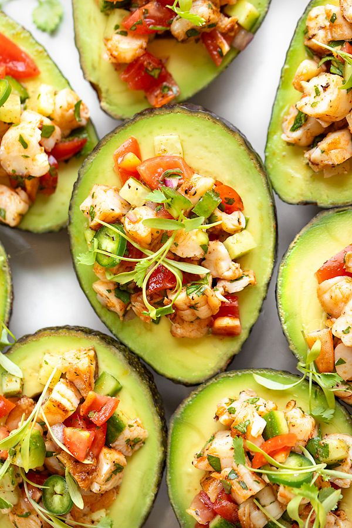

Rich, buttery avocados stuffed with a zesty Greek salad of organic chickpeas, diced Persian cucumbers, cherry tomatoes, Kalamata olives, and crumbled feta cheese with an oregano vinaigrette.

Cut ripe avocados in half lengthwise and carefully remove pits. Scoop out a small spoonful of avocado flesh to create a deeper boat for stuffing.
In a mixing bowl, combine rinsed chickpeas, diced cucumbers, halved cherry tomatoes, chopped Kalamata olives, and red onion.
Whisk together extra-virgin olive oil, freshly squeezed lemon juice, dried Greek oregano, salt, and freshly ground pepper.
Spoon generous amounts of the chickpea salad into each avocado cavity. Top with crumbled sheep's milk feta and fresh flat-leaf parsley.